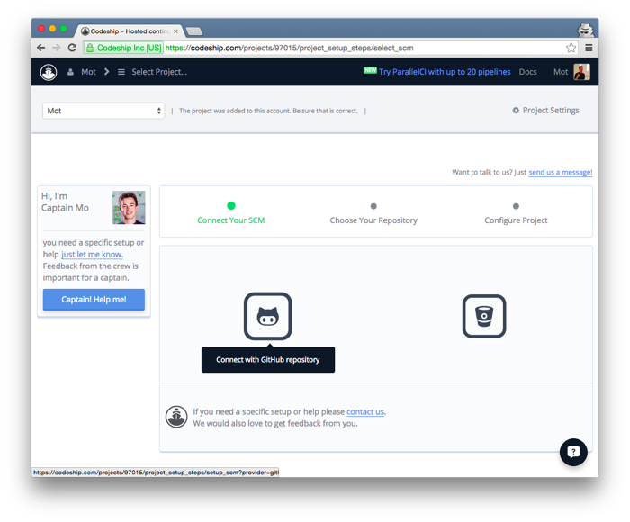
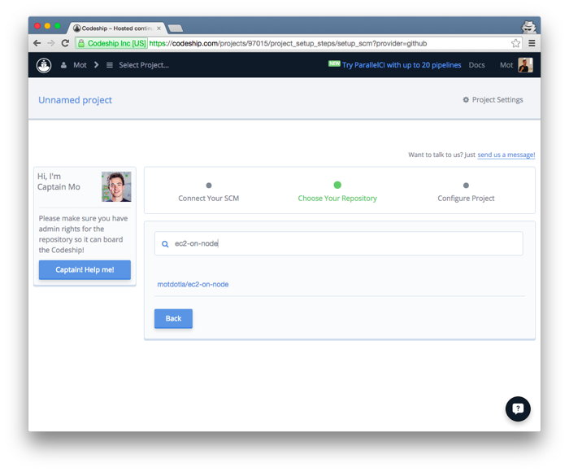
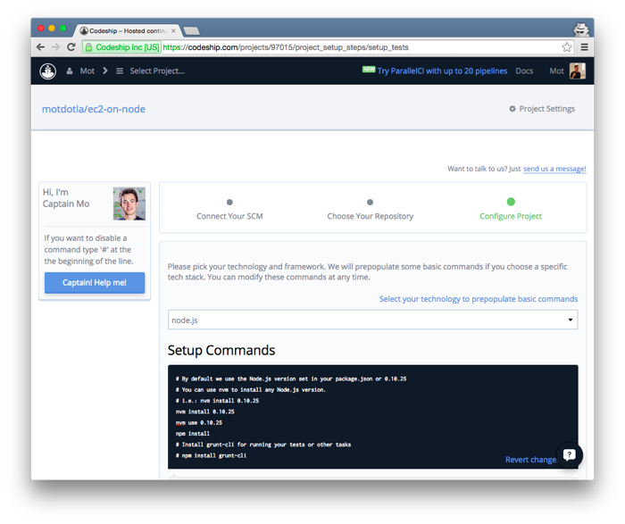
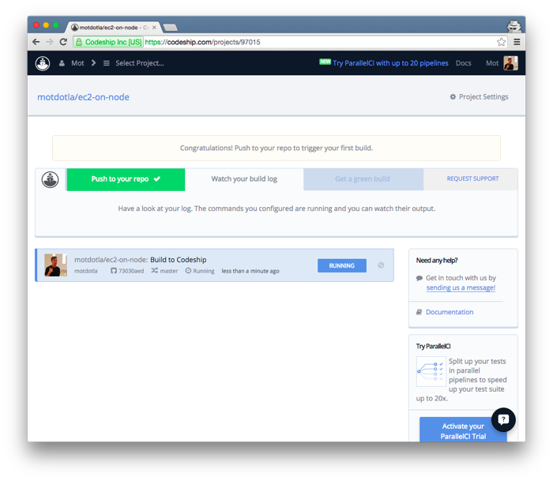
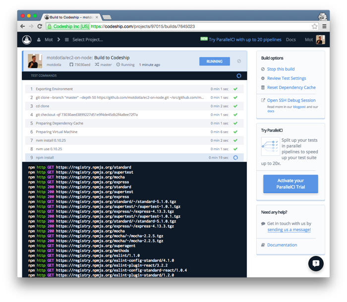
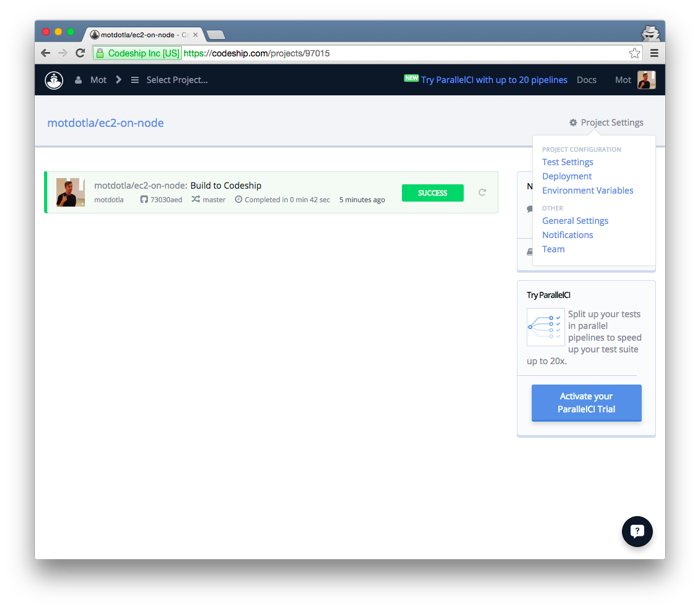
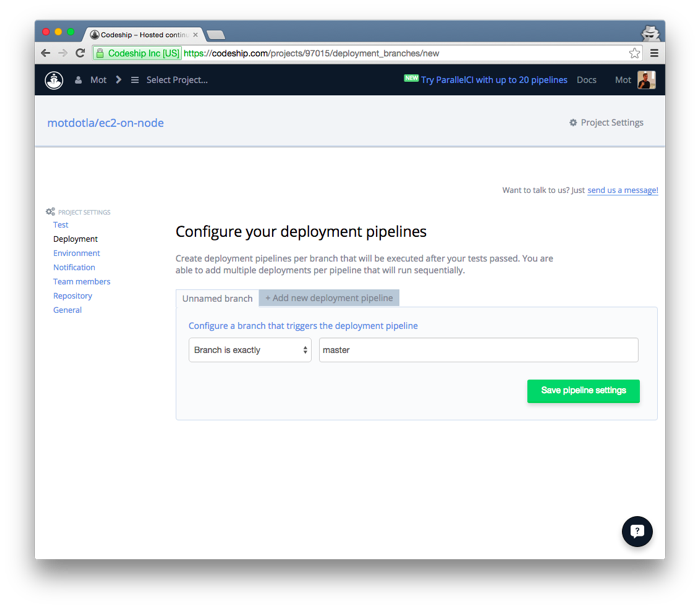
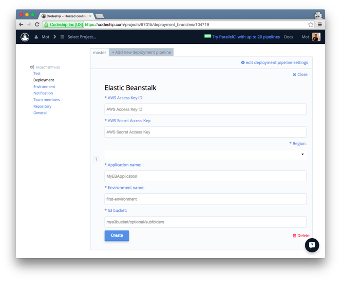
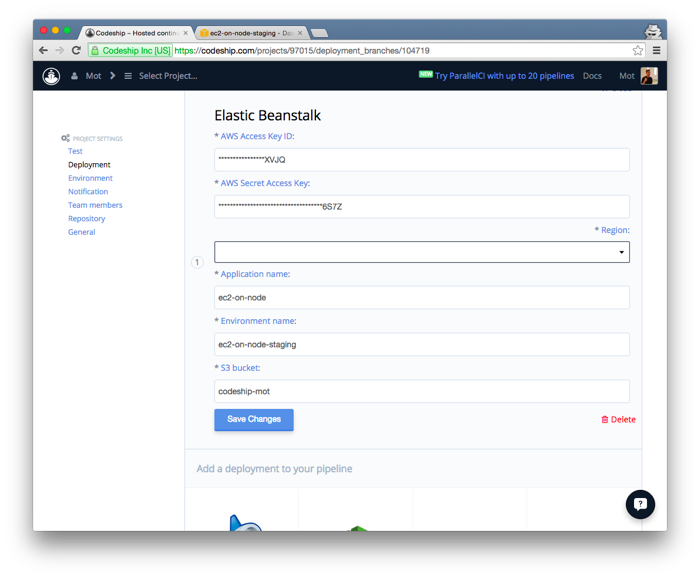

In this article, I show you how to setup Continuous Deployment to Amazon EC2 using Codeship and Elastic Beanstalk.
Begin by creating a free account on Codeship. Then click 'Create New Project'. On the next screen, connect your source code manager. I chose GitHub.
Choose your repository. I chose ec2-on-node.
Select `node.js` on the Configure Project page. Then click the `Save and Go to Dashboard` button.
Nice, now you are set to test the setup. Create an empty commit on your project.
git commit --allow-empty -m "Trigger Codeship" git push origin master
You will see the build change to a `Running` status. You can click on the build to view more granular data.
 Great! You have continuous integration running with tests. Now you can setup the continuous deployment to EC2 using Elastic Beanstalk.
Click `Project Settings` > `Deployment`.
On the next screen set the branch to `master` and click `Save pipeline settings`.
Choose `Amazon Elastic Beanstalk` and configure its settings.
This is where things go a little beyond beginner level. Just take your time. It's not too bad.
First, you need an application already setup on Amazon EC2 and Elastic Beanstalk. Follow the instructions here on how to setup an application on Amazon Elastic Beanstalk.
Second, create a new user on your Amazon account named `Codeship` and setup that user's IAM policy. Instructions are here.
Third and last, create a new S3 bucket here name `codeship-yourname`.
When you are all set enter the settings, and click `Create`. Here is what mine looks like when completed.
Lastly, trigger the build one more time. It will deploy after tests pass.
git commit --allow-empty -m "Trigger Deployment to Amazon EC2" git push origin master
Congratulations! You just setup a really baller continous deployment strategy.